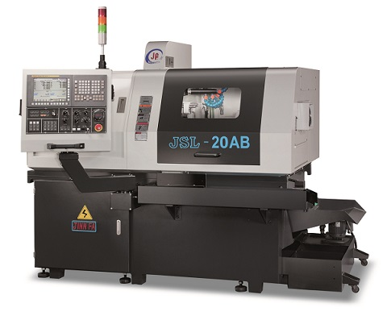
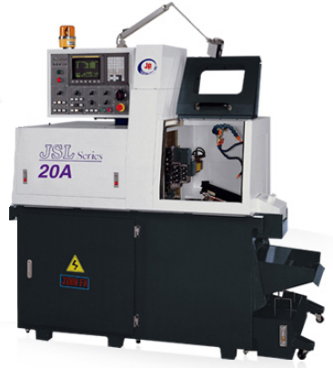
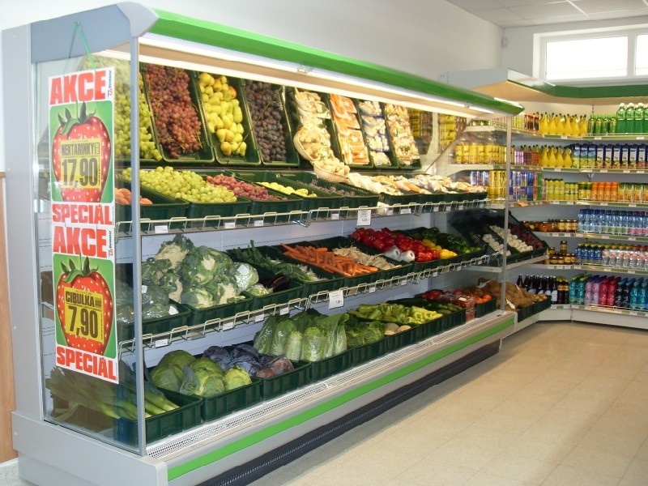
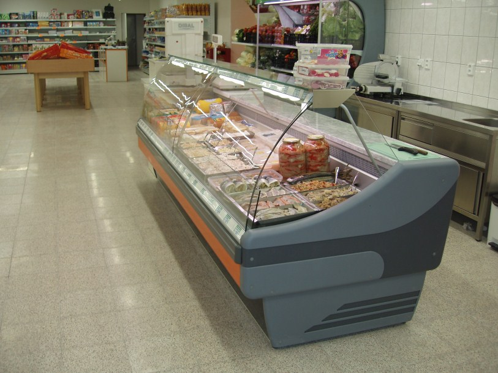

Přesné CNC kovoobrábění a zakázková kovovýroba
KRAUBE, s.r.o. dodává vysoce přesné rotační i prizmatické dílce pro strojírenství. Zajišťujeme komplexní třískové obrábění, CNC soustružení, vertikální frézování, zámečnickou montáž i finální povrchové úpravy.
Přesné CNC soustružení hřídelí, čepů a přírub
Vysokorychlostní soustružení z tyčového materiálu i dělených polotovarů na CNC strojích s poháněnými nástroji. Přesnost v tolerancích IT6 až IT7 pro náročné strojírenské aplikace.
- Průměr z tyčí Ø 5 až 65 mm, příruby až do Ø 300 mm
- Max. točná délka obrobků 750 mm mezi hroty
- Poháněné rotační nástroje pro axiální a radiální vrtání

CNC vertikální frézovací centrum
Přesné obrábění desek, skříňových odlitků, svařenců a forem. Tuhá litinová konstrukce a vysokorychlostní vřeteno s otáčkami až 10 000 ot/min zaručují dokonalou jakost povrchu.
- Rozjezdy os: X 1000 mm, Y 600 mm, Z 500 mm
- Upínací stůl 1200 × 600 mm s nosností až 800 kg
- Automatický zásobník nástrojů na 24 pozic

Kovovýroba, přesné dělení a certifikované svařování
Zpracování konstrukčních i nerezových ocelí. Dělení profilů na přesných pásových pilách s úhlováním, vrtání, závitování a svařování metodami MIG/MAG a TIG.
- Přesné dělení hutního materiálu do úhlu 60°
- Svařování MIG/MAG i pohledové TIG pro nerez
- Finální montáž a kompletace mechanických sestav

Povrchové úpravy, zušlechťování a kalení
Dodáváme dílce kompletně připravené k okamžité montáži do vašich strojů. Zajišťujeme zinkování, černění, eloxování i metalurgické tepelné zpracování.
- Galvanické zinkování v modrém i žlutém chromátu
- Chemické černění (brynýrování) s konzervací
- Anodická oxidace (elox) hliníkových součástí

Inženýrská přesnost od výkresu po expedici
Technologická příprava
Zpracování CAD/CAM modelů, optimalizace řezných drah pro minimální strojní časy a volba optimálního nástrojového vybavení.
Přesné CNC obrábění
Kusová i sériová výroba na CNC soustruzích a frézkách s garancí geometrických tolerancí IT6 až IT7.
Kontrola rozměrů & Protokol
Průběžná a výstupní kontrola kalibrovanými digitálními měřidly a posuvnými měrkami před expedicí zákazníkovi.
Expedice & Logistika
Bezpečné balení obrobených součástí s antikorozní ochranou a spolehlivé dodání přímo do vašeho výrobního závodu.
Katalog výrobních kapacit a technologií
Přehled výrobních možností KRAUBE, s.r.o. pro vaše strojírenské projekty.
Přesné CNC soustružení rotačních dílců
Produktivní kusová i sériová výroba hřídelí, čepů, pouzder a přírub na moderních CNC soustruzích s poháněnými nástroji a C-osou.
CNC vertikální 3-osé a víceosé frézování
Vysoce přesné frézování deskových, skříňových a tvarově složitých dílců na vertikálních CNC centrech s vysokorychlostním vřetenem.
Zakázková kovovýroba a zámečnická montáž
Komplexní zpracování ocelových profilů, pásové dělení, přesné vrtání, svařování metodami MIG/MAG a kompletace podsestav na klíč.
Povrchové úpravy a zušlechťování kovů
Kompletní finální ochrana obrobených dílců: galvanické zinkování, chemické černění (brynýrování), eloxování hliníku i kalení.
Spojte se s výrobou KRAUBE
Poptáváte přesné kovoobrábění, frézování nebo sériové soustružení? Zašlete nám výkresovou dokumentaci nebo nás kontaktujte telefonicky.
Sídlo společnosti & Provozovna
KRAUBE, s.r.o.
Hlavní 169
664 61 Rajhradice
Okres Brno-venkov, Jihomoravský kraj
Statutární orgán & Vedení
Jednatelka: Yvona Bendová
IČO: 01823639 | DIČ: CZ01823639
Spisová značka: C 96699, Krajský soud v Brně
Datová schránka: eay7pd2
Přímé kontakty
Telefon: +420 547 229 180
E-mail: vedeni@kraube.cz
Poptávky: poptavky@kraube.cz
Poptávka kovoobrábění
Zašlete nám výkres dílce (PDF, STEP, DWG) nebo specifikaci požadavků na obrábění. Rádi vám zpracujeme nezávaznou nabídku.